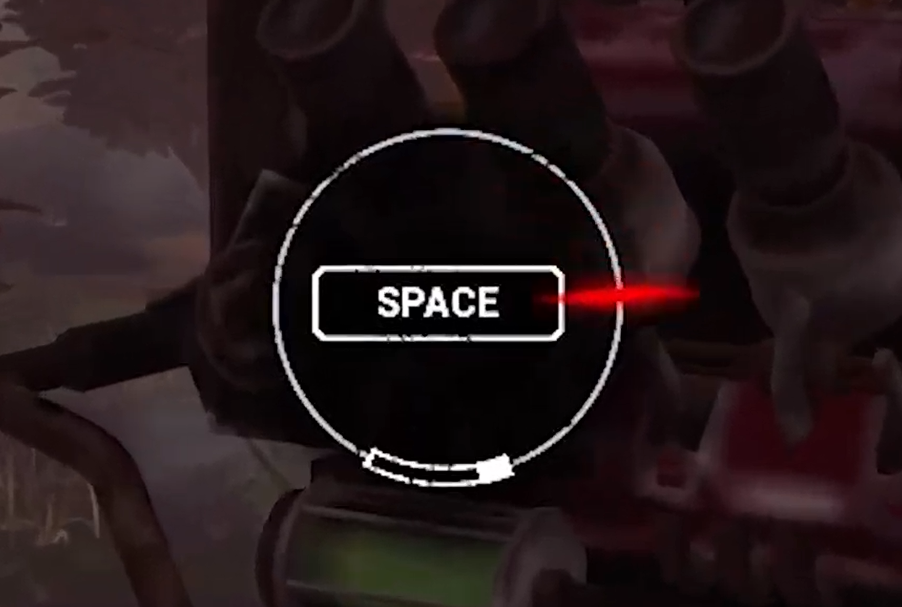
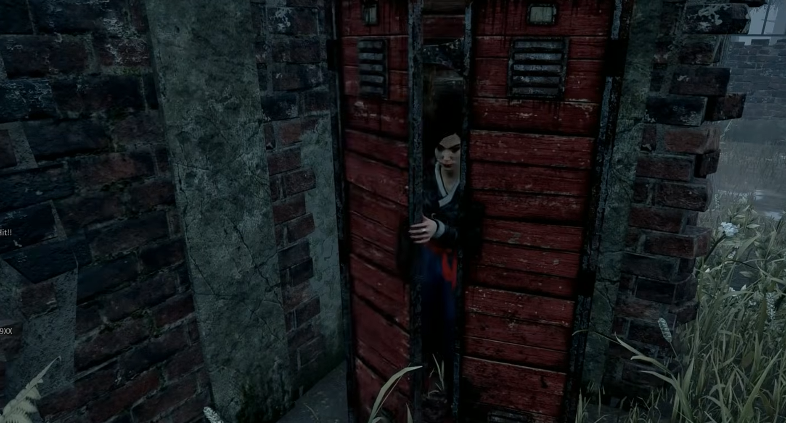
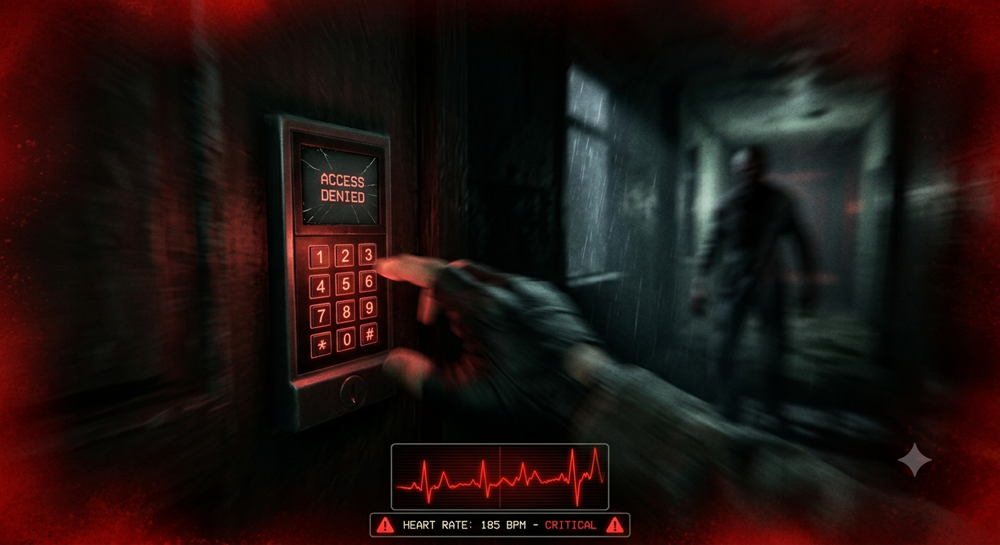
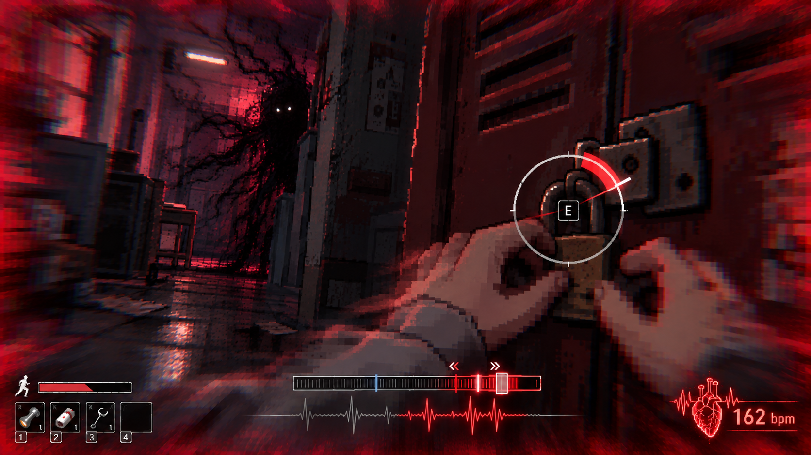
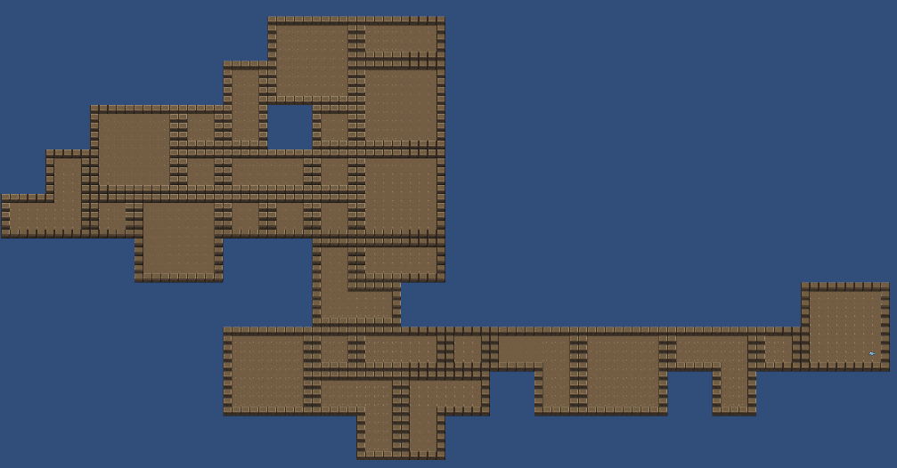
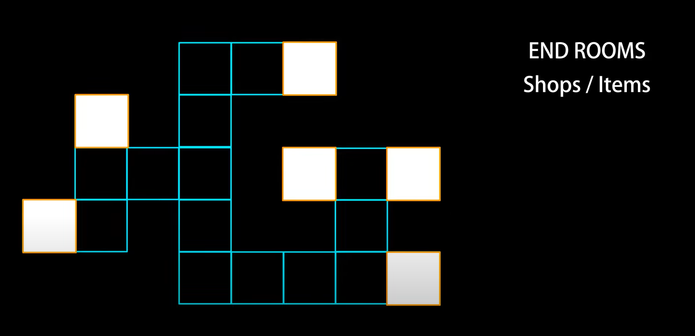
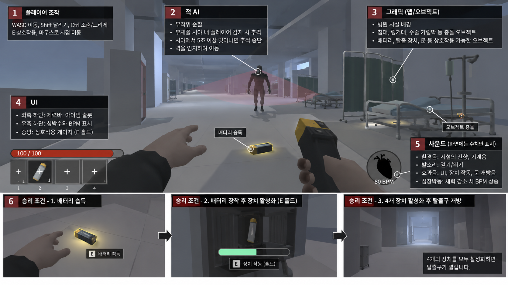

데드 바이 데이라이트
QTE와 숨는 행동 및 케비넷
클릭해서 크게 보기 ↗도망가는 상황에서도 조작에 집중해야 하는 게임입니다

플레이어에게 공포 상황이 오면, 아슬아슬하게 줄타기하는 듯한 경험을 줍니다.

게임을 만들면서 이런 부분들을 참고했습니다.


QTE와 숨는 행동 및 케비넷
클릭해서 크게 보기 ↗심박 소리와 UI
클릭해서 크게 보기 ↗

맵이 뻗어나가는 구성
클릭해서 크게 보기 ↗우선 기본 기능부터 만들기 위해 역할을 나눴습니다.
담당자: 곽태호
구현 범위: 탈출을 하기 위한 장치 및 탈출구 만들기
담당자: 김해아
구현 범위: Unity 맵 안에서 움직임이 구현된 플레이어
담당자: 이현석
구현 범위: 플레이어를 인지하며 이동하는 적 구현
담당자: 김세환
구현 범위: 유니티 내 기본 GUI 세팅
담당자: 이태윤
구현 범위: 레퍼런스 이미지 찾은 것을 참고하여 몇 개 만들어보기
담당자: 박종빈
구현 범위: 소리 에셋들 네이밍규칙 설정해서 깃허브에 업로드
장치 4개를 활성화하여 탈출구를 열고 탈출합니다.
자주 쓰는 조작과 기본 구조를 먼저 만들었습니다.
| 조작 | 키 | 동작 |
|---|---|---|
| 이동 | WASD | 상하좌우 이동 |
| 달리기 | Shift | 기본 이동의 1.8배 |
| 앉기 | Ctrl | 자세를 낮춰 환풍구 진입 |
| 시점 | 마우스 | 주변을 둘러보기 |
| 상호작용 | E | 물건 줍기 / 문 열기 |
| 버리기 | F | 보유한 물건 버리기 |
| 아이템 선택 | 1~3 / 0 | 아이템 선택 / 맨손 전환 |
| 메뉴·확인 | Esc / Enter | 메뉴 열기·UI 종료 / 선택 확인 |
맵 이동, 아이템 습득, 문과 장치의 상호작용에 공통으로 사용할 기본 구조를 만들었습니다.
앞으로 기믹과 QTE를 연결하면서 조작 안내와 입력 방식을 조정할 수 있습니다.
V 시점 전환은 필요 여부를 최종 확인할 항목입니다. 영상은 10초 이내로 준비합니다.
순찰하다가 플레이어를 발견하면 추격합니다.
시연 영상은 10초 이내로 준비합니다.
플레이어 감지를 기존 부채꼴 범위 방식에서 레이캐스트 방식으로 바꾸는 방향을 검토합니다.
벽에 끼지 않고 이동하는지, 감지와 추격 해제가 자연스러운지 확인합니다.
발표 전 실제 반영 상태를 확인해 변경 전·후를 구분해서 설명합니다.
손전등과 심박수에 반응하는 적 · 다음 구현 계획
자료 준비 중 · 이 영역을 이미지 또는 영상으로 교체하세요
기본 적보다 빠르게 이동합니다.
플레이어의 심박수가 높을수록 더 빨라집니다.
손전등을 적에게 비추면 멈춥니다.
현재 구현 범위와 예정된 규칙을 구분해 발표합니다.
플레이 중 확인할 정보와 잠깐 나타나는 안내를 나눕니다.
플레이 중 상태를 확인하는 체력·심박수 표시입니다.
상호작용 안내나 이벤트 알림처럼 필요한 순간에 나타나는 표시입니다. 실제 구현한 항목을 여기에 정리합니다.
기존 구현 설명: 체력이 줄어들면 심박수가 올라가고 심장 박동이 빨라집니다.
공간 전체의 분위기와 오브젝트 제작 기준을 함께 보여줍니다.
자료 준비 중 · 이 영역을 이미지 또는 영상으로 교체하세요
자료 준비 중 · 이 영역을 이미지 또는 영상으로 교체하세요
자료 준비 중 · 이 영역을 이미지 또는 영상으로 교체하세요
넓은 바탕, 보조 영역, 강조 영역으로 나눠 사용합니다.
위 팔레트는 발표 HTML 기준입니다. 게임 그래픽의 색상은 실제 분위기 보드에 맞게 수정하세요.
[공간에서 느껴졌으면 하는 분위기]
[메시 형태 / 채색 기법 / 오브젝트 특징]
실제 제작에 사용한 문장이나 프롬프트를 넣어주세요.
어느 부분을 참고했는지 자료 바로 아래에 설명합니다.
자료 준비 중 · 이 영역을 이미지 또는 영상으로 교체하세요
[그림자 경계와 물체의 외곽 형태에서 참고한 부분]
자료 준비 중 · 이 영역을 이미지 또는 영상으로 교체하세요
[배경의 정보량과 벽 높이에서 참고한 부분]
자료 준비 중 · 이 영역을 이미지 또는 영상으로 교체하세요
[광원이 퍼지는 범위와 밝기 대비에서 참고한 부분]
레퍼런스를 바탕으로 실제 제작한 오브젝트입니다.

게임 내 충돌 오브젝트

게임 내 충돌 오브젝트

게임 내 충돌 오브젝트
주요 소리의 용도와 실제 음원을 함께 확인합니다.
| 소리 | 사용 상황 |
|---|---|
| 메인 타이틀 BGM | 게임 시작 후 메인 화면에서 나오는 음악 |
| 적 추격 시작 BGM | 적이 플레이어를 확신하고 추격을 시작했을 때 BGM |
| 환경음 | 기본 엠비언트 음향효과 |
| 심장 박동 소리 | 적이 근처에 있을 때 나는 소리 |
| 거친 숨 소리 | 적 추격에서 벗어나거나 달릴 때 효과음 |
| 걸어다니는 소리 | 기본 플레이어 걷기 소리 |
게임 시작 후 메인 화면에서 나오는 음악
적이 플레이어를 확신하고 추격을 시작했을 때 BGM
기본 엠비언트 음향효과
적이 근처에 있을 때 나는 소리
적 추격에서 벗어나거나 달릴 때 효과음
기본 플레이어 걷기 소리
장면에 따라 어떤 소리가 겹치는지 보여줍니다.
구성 설명용 예시입니다. 실제 음원 분석 결과나 정확한 재생 타이밍을 나타내지 않습니다.
환경음·발소리·추격음이 함께 들리는 시연 음원을 넣어주세요.
아직 종합 음원이 연결되지 않았습니다.
용도에 따라 BGM / AMB / SFX로 분류하고, 재생 상황과 방식이 드러나도록 파일명을 정리했습니다.
SFX_Player_Heartbeat_Loop_02.wav분류 → 대상 → 행동·상태 → Loop / OneShot → 번호
사용할 소리마다 출처와 라이선스, 실제 적용할 장면을 함께 기록합니다.
각자 만든 것들을 합치면 대략 이런 모습입니다.

앞으로 할 것과 다음 테스트 목표를 정리합니다.
심박수 플레이어와 연결
QTE 스킬체크 기능과 간단한 미니게임으로 상자나 기믹과의 상호작용을 구현
탈출에 필요한 베터리를 손전등 or 탈출장치에 사용하는 이지선다 시스템
DEAD SIGNAL · 게임개발실습